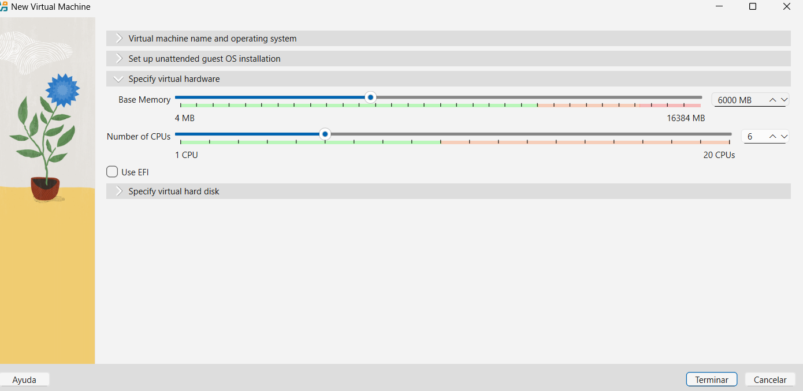
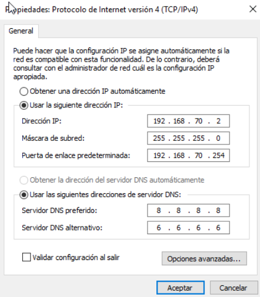
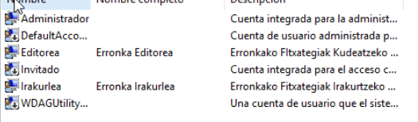
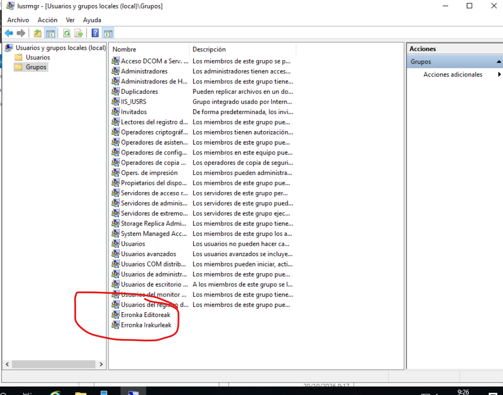
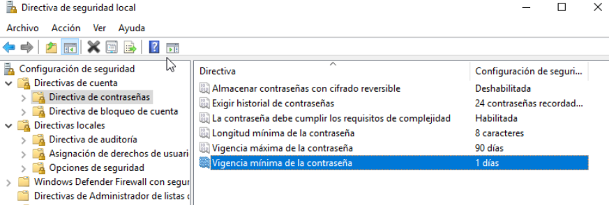
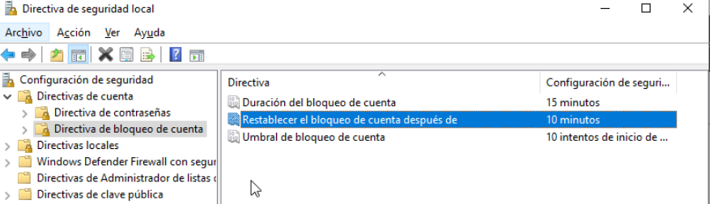
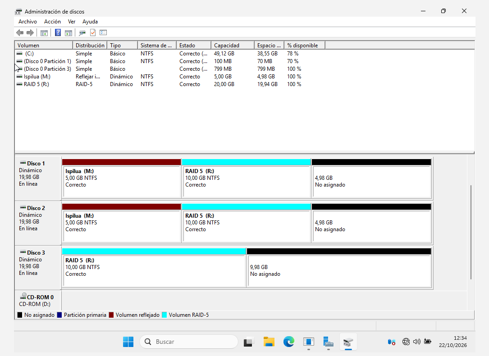
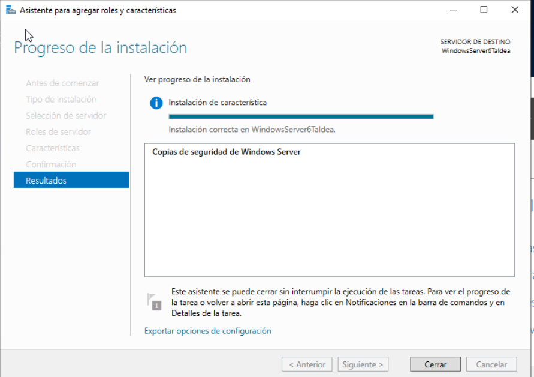
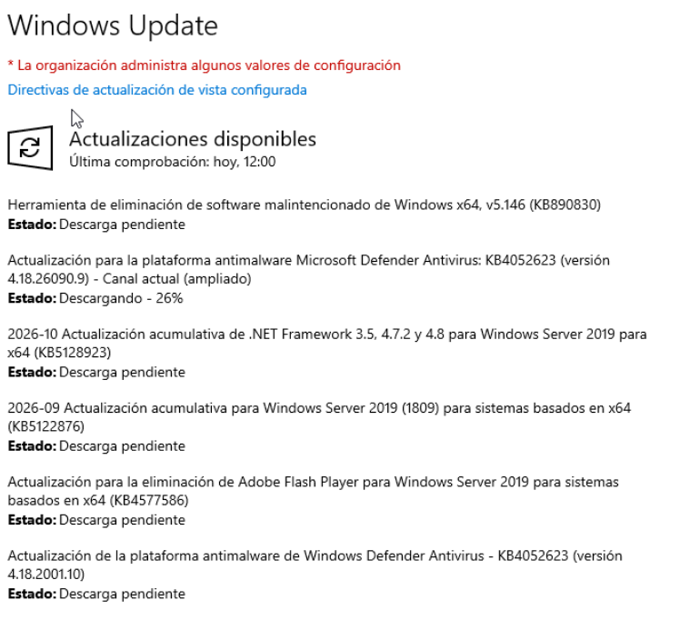

Windows Server 2025, Erabiltzaileak eta RAID
VirtualBox-n WindowsServer6Taldea (192.168.70.2) zerbitzariaren konfigurazioa: tokiko erabiltzaileak, segurtasun-politikak, NTFS baimenak, RAID bolumenak eta Windows Backup.
1. Virtual Box eta WindowsServer6Taldea
VirtualBox plataforman Windows Server 2025 makina birtuala prestatu dugu:
Hardware Birtuala

Sare Konfigurazioa

2. Erabiltzaileak, Taldeak eta NTFS Baimenak
Sortutako Erabiltzaileak eta Taldeak:
- Editorea:
Erronka Editoreaktaldekoa (Modificar baimena). - Irakurlea:
Erronka Irakurleaktaldekoa (Lectura y ejecucion). - Pasahitza:
Admin_121bi erabiltzaileentzat.
Segurtasun Zuzentarauak (secpol.msc):
- Gutxieneko luzera: 8 karaktere • Konplexutasuna: Gaituta.
- Indarraldia: 90 egun • Historiala: 24 pasahitz.
- Blokeo-muga: 10 saiakera oker • Iraupena: 15 minutu.
Erabiltzaileak eta Taldeak


Segurtasun Zuzentarauak


3. Disko-Kudeaketa eta RAID Arkitektura

RAID 1 (Ispilua - Mirror)
- Bi diskotan datu berdinak aldi berean (% 50 erabilgarri).
- Disko bat hondatzea jasaten du; webgunea hemen gordeko da.
RAID 5 (Paritate Banatua)
- Gutxienez 3 disko behar ditu (% 66 erabilgarri 3 diskorekin).
- Irakurketa azkarra eta paritate bidezko segurtasuna eskaintzen du.
4. Windows Server Backup eta Berreskuratzea

5. Windows Server Actualizazioak
